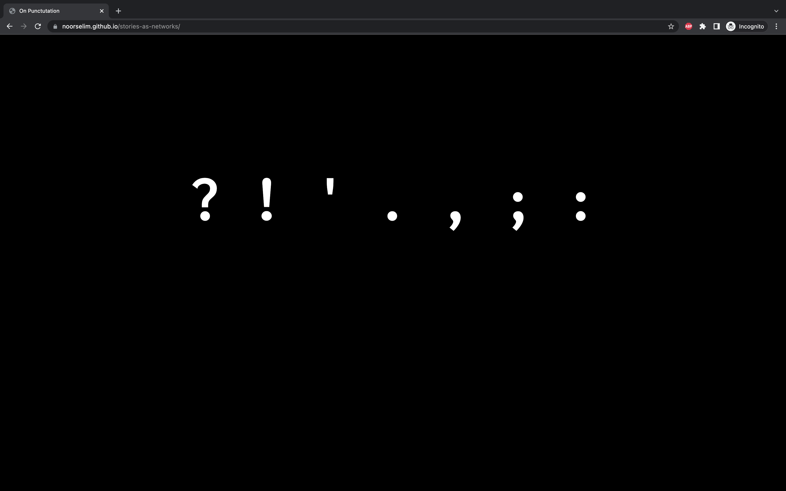

Gertrude Stein (February 3, 1874 – July 27, 1946) was an American novelist, poet, playwright, and art collector. Born in Pittsburgh, Pennsylvania, in the Allegheny West neighborhood and raised in Oakland, California, Stein moved to Paris in 1903, and made France her home for the remainder of her life.
Stein was known for her quirky personality and charismatic writing, yet she took a particular conflict with multiple of the writing mechanics of her time, including specific punctuation marks. In fact, she wrote a lengthy essay on her opinions of punctuation marks in ‘Lectures in America’, praising some and scolding others. One of the markings she hated the most was the comma. Although commas appear in most of her work (including her essay about how much she hates them), it was probably more of the editors’ choice than her own.

Ideation & Design Process
Noor uses a minimal theme with black background and accent colours like pink. There are two different typefaces used in this website, the first one being Inconsolata, which is a sans serif typeface and the second one is the system default monospace typeface.
Different punctuation has a different accent colour and a similar hover animation. Overall, there's a rigid and consistent system in the website. The minimal design helps to provide a clean experience.
Lastly, the webpages are connected together with a bottom navigation bar. On the last page, there's an option to back to the home page and start over. Instead of numbers, the bottom navigation bar depicts the pages by their repsective symbols.
Critique
Overall, the website had a positive response from the class. The symbols, hover animation, and the top animation works well. The appearence of symbols whilst hovering over the title and the bottom navigation bar makes the website design consistent.
The layout of the website is still organized when the user resizes, this means that the website is responsive. The colour scheme of the website and the typefaces used are also good and makes the website comfortable for reading.
View the Live Project